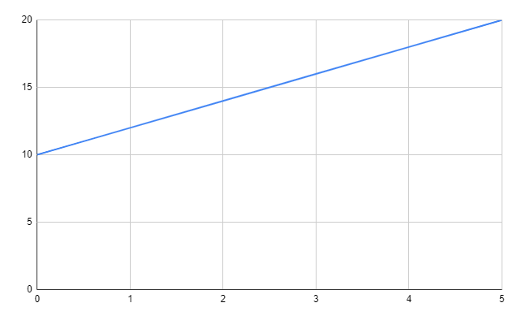
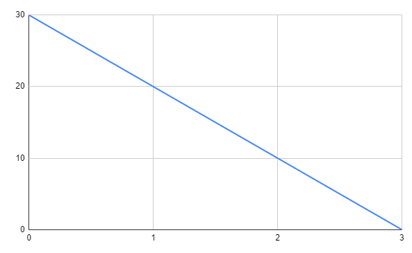
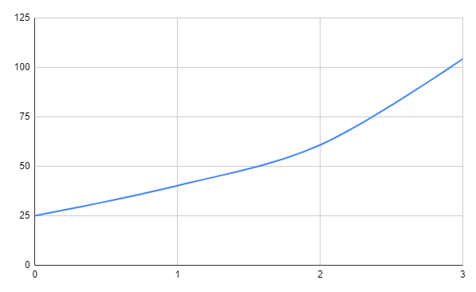

Een woordformule is een formule met woorden, die vaak refereren naar variabelen of antwoorden. Voorbeeld:
Kosten per uur in € = 20 + 13,15 x aantal bouwvakkers.
Kosten per week in € = -50 x aantal werkende werknemers.
In het geval bij het onderste, moet je -50 gebruiken, en dat vermenigvuldigen met het aantal werkende werknemers.
Je kan woordformules ook korter noteren, zoals hieronder vertoond wordt:
Kosten per uur in € = 20 + 13,15 x aantal bouwvakkers.
K = 20 + 14B
K staat hier voor Kosten per uur in €
B staat hier voor aantal bouwvakkers.
Je hebt ook eenheden, zoals je hebt met tijd: seconde, minuut, uur, week, maand, jaar etcetera. Dit heb je ook met afstand (meter, kilometer, millimeter) en andere eenheden.
Ook moet je kunnen een grafiek te tekenen, hieronder een stappenplan.
1. Maak een tabel (als nodig).
2. Teken het assenstelsel.
3. Schijf de variabelen in het tabel.
4. Zet er getallen bij die kloppen.
5. Teken de punten in het assenstelsel, zo accuraat als je mogelijk kan.
6. Trek door de getekende punten een rechte lijn.
7. Zet een titel boven het grafiek.
Je kan ook een formule een grafiek maken, zoals hieronder vertoont wordt.
T = 10 + 2B
of
Tijd = 10 + 2 x Niet werkende bouwvakker.
.
In een grafiek heb je een maximum en een minimum. Natuurlijk is het hoogste punt in een grafiek een Maximum, en het laagste punt een Minimum, zoals hieronder vertoont wordt.
L = 30 - 10T
of
Lengte in cm = 30 - 10 x Tijd in uren.
.
Het maximum is in dit geval 30, en het minimum is in dit geval 0.
Je hebt ook een linieare verband, waarbij het steeds sneller gaat groeien, zoals hieronder.
Formule is (25 x 1,61t) waarin t = tijd in jaren is.
.
Als je naar het onderstaande tabel kijkt, merk je mogelijk iets op. Het bovenste en onderste groeien beide met hetzelfde. Als dat bij andere tabellen het geval is, heb je een regelmaat gevonden in een tabel.
| A | 1 | 2 | 3 | 4 |
| B | 40 | 80 | 120 | 160 |
In dit tabel komt er boven steeds 1 bij, en onder steeds 40.
Ook heb je een richtingscoefficient in het bovenstaande tabel. Voor elke A die erbij komt, komt er bij de B weer 40 bij. Het richtingscoefficient is hier dus 40.
| A | 1 | 2 | 3 | 4 |
| B | 45 | 81 | 111 | 167 |
In dit tabel komt er boven steeds 1 bij, maar onder komt er niet steeds hetzelfde bij, dit is dus geen regelmaat. Hier is dus ook geen richtingscoefficient.
Je kan ook een regelmaat en richtingscoefficient berekenen met een formule, namelijk:
Toename onder / Toename boven = Richtingscoefficient
Als we dit proberen met het bovenste tabel, komen we hier op uit:
40 / 1 = 40
80 / 2 = 40
120 / 3 = 40
160 / 4 = 40
Het antwoord is steeds hetzelfde, namelijk 40, dus heeft het regelmaat. Hierdoor wordt 40 dus ook het richtingscoefficient.
Bij een tabel met regelmaat hoort een lineaire formule.
Hoe pak je dit aan?
Tabel:
| A | 0 | 2 | 6 |
| Tijd | 6 | 10 | 18 |
Formule I: 6 + 4a
Formule II: 6 + 2a
1. Kijk of er regelmaat is in de tabellen.
2. Neem formule I. Vul een getal in voor a. Begin met a = 0. Bereken de tijd.
3. Kijk of de uitkomst klopt.
4. Klopt het niet? Kies dan de volgende formule. Klopt het wel, kies dan voor a een ander getal uit de tabel.
5. Als het weer klopt heb je de juiste formule.
Oefen hier meer met alles (zelfgemaakt)!